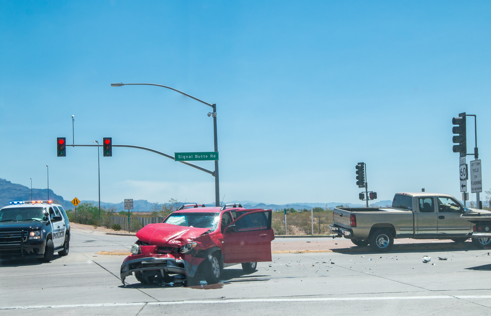

Car Accident
$15,000,000
Catastrophic automobile accident result involving serious injuries.
Our lower fee structure helped this client keep an additional $1,050,000 compared to a typical 45% litigation fee.